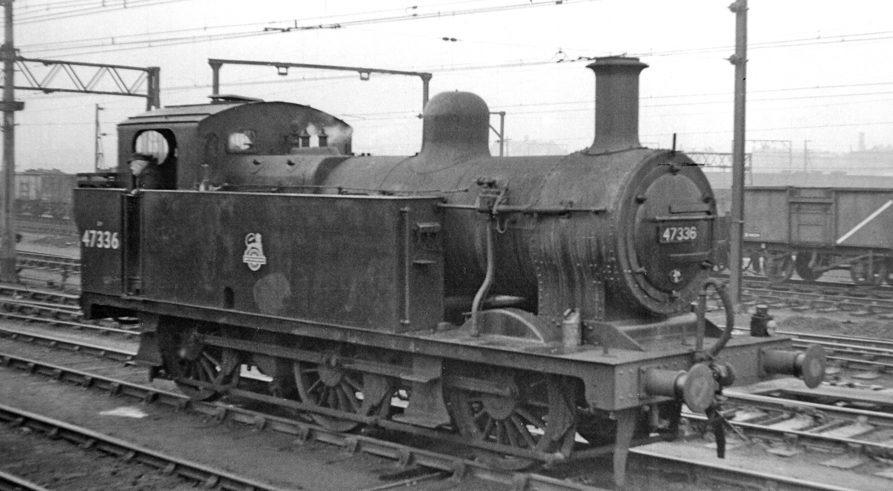
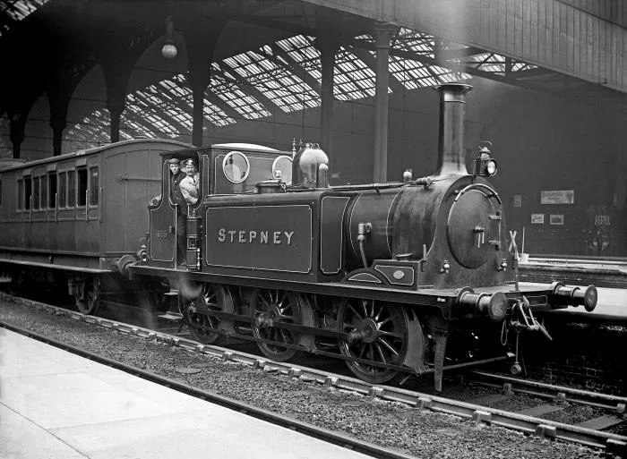
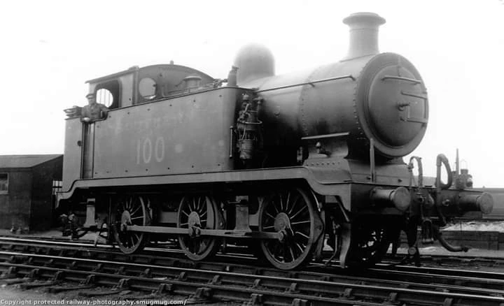
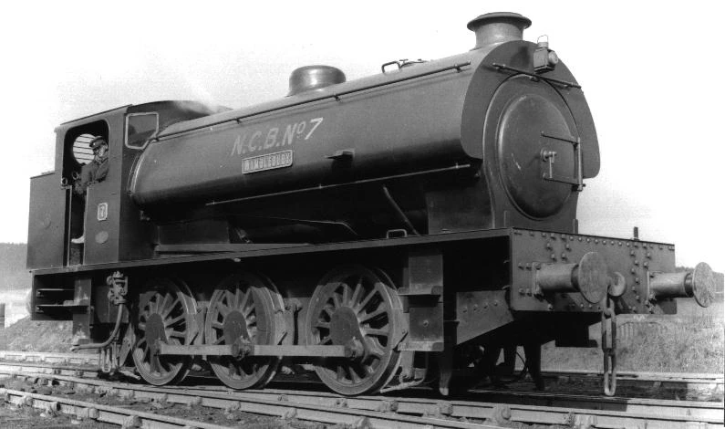
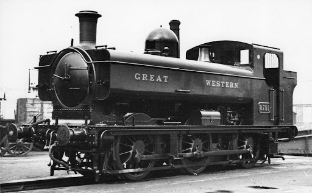
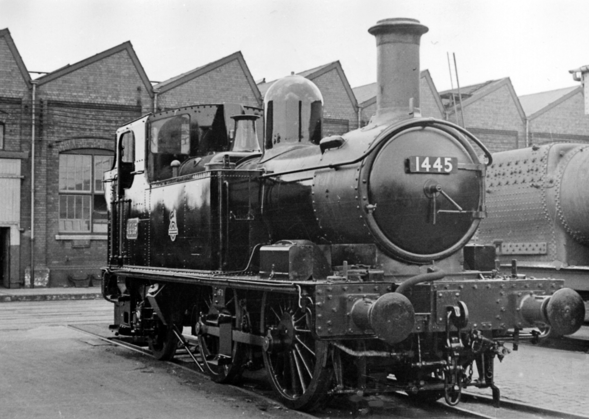

JMS Jinty
A Jinty-ket a London Midland Scottish railway építette elősször 1924-ben. Összesen 422 építettek. Az utolsót 1967-kor vonták ki a forgalomból a British Railways tulajdonában.
Lbscr Terrier
Terrier-eket a London, Brighton and South Coast Railway építette elősször 1872-ben. Érdekes módon ezeket a kis mozdonyokat eredetileg expressz vonatok húzására találták ki. Az utolsót 1963-ban vonták ki a forgalomból a British Railways tulajdonában.
Lbscr E2
E2-seket a London, Brighton and South Coast Railway építette elősször 1913-ban. Ez a falyta mozdony nem más mint Thomas a gőzmozdony valódi megfelelője, de ellentétben Thomas-sal ezek a mozdonyok nem voltak nagyon hasznosak mert kevés szenet tudtak tárolni. Az utolsót 1963-ban vonták ki a forgalomból a British Railways tulajdonában.
Austerity tank
Az Austerity tank-ek az egyik legmodernebb mozdony ezen a listán amit a War Department építette elősször 1943-ban. Ezek a mozdonyok leginkább ipari munkát végeztek. Az utolsót 1984-ben vonták ki a forgalomból gyári tulajdonban.
GWR Pannier
GWR Pannier tank-eket elősször a Great Western Railway építette 1929-ben. Ezek a mozdonyok a leginkább elterjedt az összes közül összesen 863-mat építettek. Az utolsót 1971-ben vonták ki a British Railways tulajdonában.
GWR 14XX
A GWR 14XX-eket ("Auto Tank-eket") elősször a Great Western Railway építette 1932-ben. Ezeket a mozdonyokat szárny vonalakra tervezték utasvonatok húzására. Az utolsót 1965-ben vonták ki a British Railways tulajdonában.
